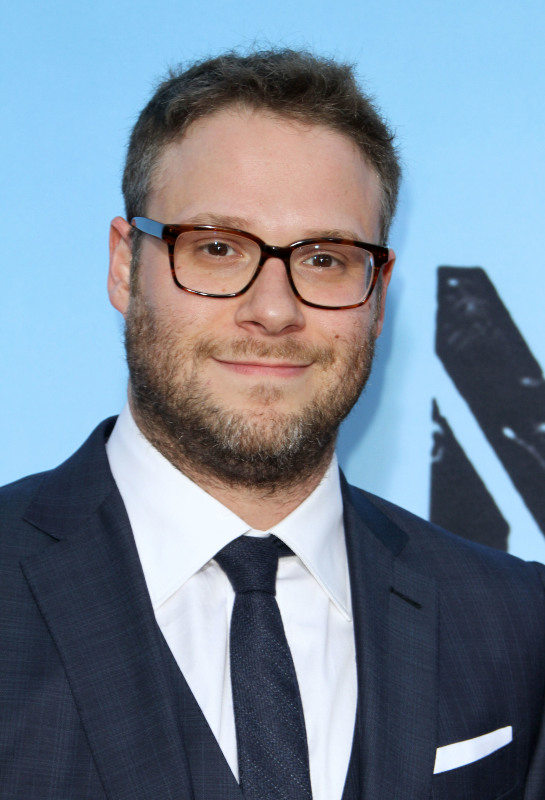

Réalisateur
Jon Favreau
Métiers : Acteur, Réalisateur, Producteur délégué
Nom de naissance : Jonathan Kolia Favreau
Nationalité : Américain
Naissance : 19 octobre 1966
(New York - Etats-Unis)
Age : 53 ans
Acteurs de doublage (voix locales)
Rayanne Bensetti
Rôle : Simba
Métiers : Acteur
Nationalité : Français
Naissance : 9 avril 1993
(Lyon - France)
Age : 27 ans
Anne Sila
Rôle : Nala
Métiers : Actrice
Nationalité : Française
Naissance : 5 mars 1990
(Valence - France)
Age : 30 ans
Jean Reno
Rôle : Mufasa
Métiers : Acteur, Réalisateur
Nationalité : Français
Naissance : 30 juillet 1948
(Casablanca - Maroc)
Age : 71 ans
Alban Ivanov
Rôle : Pumbaa
Métiers : Acteur
Nationalité : Français
Naissance : 10 septembre 1984
(Narbonne - France)
Age : 35 ans
Acteurs de doublage (voix originales)
Donald Glover
Rôle : Simba
Métiers : Acteur, Scénariste, Compositeur
Nationalité : Américain
Naissance : 25 septembre 1983
(Edwards Air Force Base - Californie, Etats-Unis)
Age : 36 ans
Beyoncé Knowles-Cartes

Rôle : Nala
Métiers : Actrice, Chanteuse, Compositrice
Nationalité : Américaine
Naissance : 4 septembre 1981
(Houston - Texas)
Age : 38 ans
James Earl Jones
Rôle : Mufasa
Métiers : Acteur
Nationalité : Américain
Naissance : 17 janvier 1931
(Arkabutla, Mississippi - Etats-Unis)
Age : 89 ans
Seth Rogen

Rôle : Pumbaa
Métiers : Acteur, Producteur, Producteur délégué
Nationalité : Canadien
Naissance : 15 avril 1982
(Vancouver - Canada)
Age : 38 ans